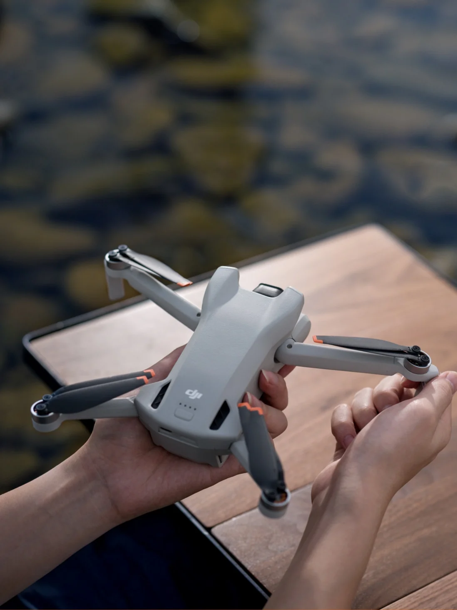
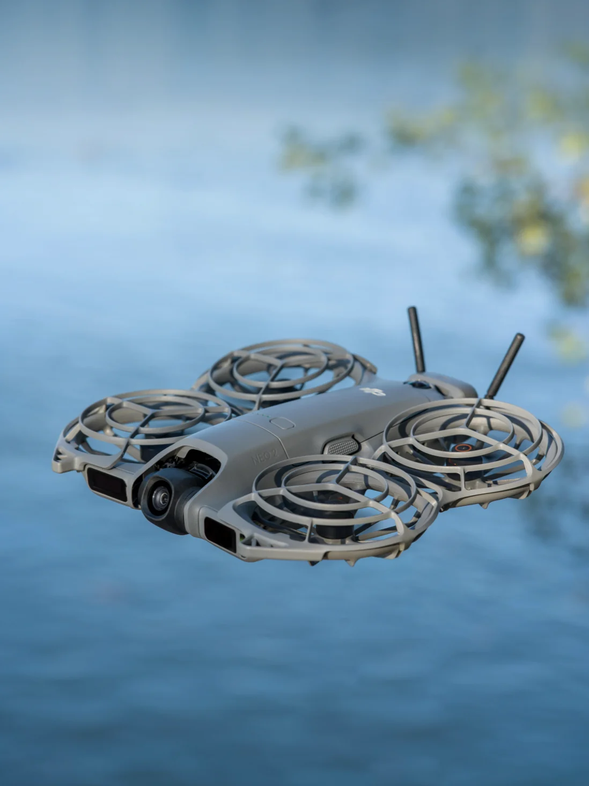
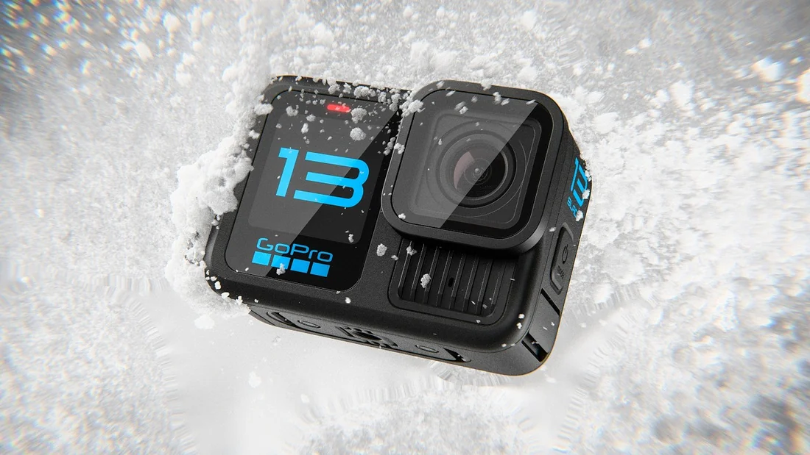
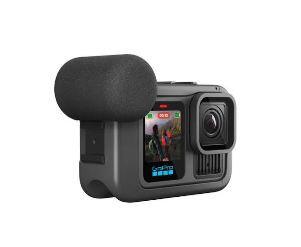
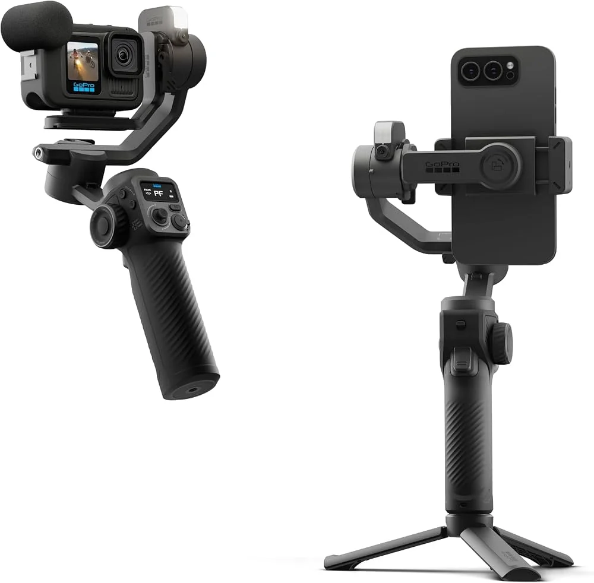
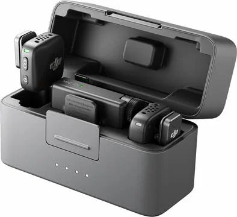
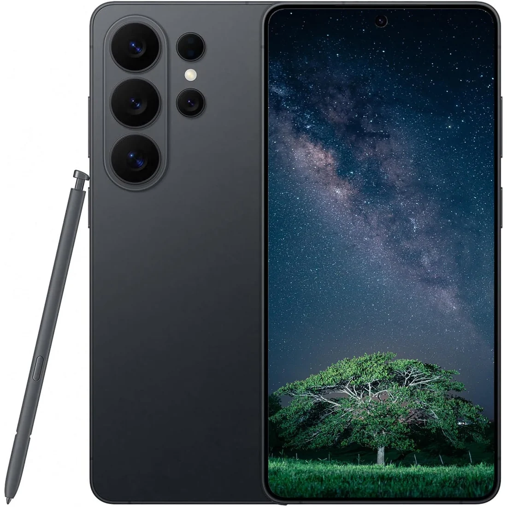

Aerial footage
DJI Mini 3
One of my two travel drones, for perspectives that begin above the road.
The equipment I use to capture and share the journey.
A practical setup that lets me capture the moments, sounds and perspectives I want to bring home.
I travel with a backpack and an extra bag. Everything below comes along to help me record, edit and share the journey as it happens.

One of my two travel drones, for perspectives that begin above the road.

The other drone in my travel setup, alongside the DJI Mini 3.

My action camera for the wet, fast and unpredictable parts of a trip.

A closer look at the Media Mod setup I use with my GoPro.

The gimbal I use to keep walking shots and moving scenes steady.

A compact microphone setup for cleaner voices and moments from the road.

Always close by for photos, quick clips, navigation and sharing the journey as it happens.
The practical extras I use to back up footage, edit on the road and keep the setup working.
Pack light.This is the kit I’m taking into the next chapter. As I learn what works best on the road, I’ll update this page.